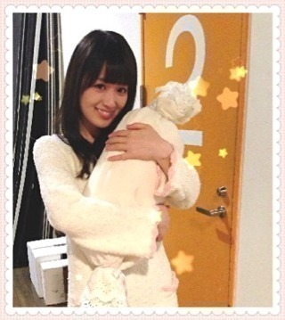
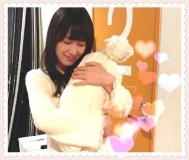

2013/1017Thu（´-`）.｡oO(か ずみん×229
バケラッタ！
みなさん、
台風の影響は大丈夫ですか(´;ω;`)？
私は大丈夫ですが、
実家の方がまだ交通被害を
受けているみたいで...(T_T)
みなさんが心配です。
気をつけてください(´;ω;`)
.
.
＊今週の伏姫についてです！＊
時間や場所はこちら↓
に載っていますので、ぜひ
アクセスしてみてください！
千葉といっても
都心から遠い場所なので...笑
もし！もし、
「都合がつくよ」って方が
いましたら、ぜひお越し下さい！
握手会で、
来てくださると言ってくれた方が
沢山いらっしゃって
嬉しかったです(T_T)
お姫様頑張りますヽ(´>∀<`*)ﾉ
ムーンクリスタルパワー・メイクアップ！！！
↑これはセーラームーン
（´-`）.｡oO(質問コーナーじゃ。
★かわいい女の子っぽい
感じで握手してって言ったら
やってくれますか？
→うーんと...
いつもは私どんななのかな(´;ω;`)？
普段から可愛くなれるように
頑張るね(T_T)！！！
.
.
.
★「アメイジング」の
誕生秘話をおしえてください。
→話せばめっちゃ長い！
ざっくり言うと楽しんごさんと
アメイジングスパイダーマンが
まざってできました！！！
.
.
.
★握手会で希望すれば
かずみんの歌声は聴けますか？
→全然歌いますっ！
ただ心構えの時間が少し必要
なので、ご了承下さい> <
.
.
.
★一年くらい前は一眼レフで
写真撮ったりしてたけど、
最近はあんまり使ってないの？
→色々あって...
最近は使ってません(´･_･`)
またいつか...
.
.
.
★前髪どうやってセット
してるんですかー？
→ヘアアイロンを180度にして
軽く内めに伸ばしてます！！
.
.
.
★ＭＶのない曲で作って
欲しい曲はありますか？
→せっかちなカタツムリは
作ってほしかったなぁ( ∩ˇωˇ∩)
.
今日はここまでっ(*´ω`*)ﾉ
明日もお仕事がんばるんば♪♪
.
.
.
離れていても、
私のこと思い出してくれるだけで
うれしいよ。
だから一実のこと
想っててね。
...ふふふ、
たまには乙女っぽいこと
言ってみる。
みんなキュンとした( *´艸｀)？
おわり！


2013/10/17 00:24


コメント(543)
めっちゃ心配(/_;)/~
千葉かー、行けたらいきたいなーめっちゃ( ☆∀☆)
うん、想ってるよww
あのときのアメジングスパイダーマン面白かったよ
かずみんはポケモン買った？(^-^)
かずみんがんばってねー！
応援してるや！
かずみん可愛い！
それではー(^-^)/
逆に学校休みにならんくてショック受けてるw
うわ、可愛い(*^o^*)
キュンとした♡
お仕事頑張ってねー！＼(^o^)／
最後かわいい!!!!(//∇//)
伏姫頑張ってくださいね〜(o^^o)♪
応援してま〜す＼(^o^)／
楽しみです。
台風大丈夫でしたか？まだまだ被害残った地域もありますもんね。各地で大変な被害になりましたね。早く元通りになってほしいですね。
この前、やっとさんまのまんま放送されました！めちゃくちゃ楽しかったです！引き笑い共演最高でした！（笑）
かたつむりにPVがあったとしたら、どんな感じになってたんでしょうか？考えると楽しそうですね！
今日もがんばりましょう！
確かにせっかちなかたつむりのMV気になる！
アルバムとか出た時に作ってくれるといいのにな〜^ - ^
次のシングルもかずみん買ったんで
よろしくお願いします ！（笑）
じゅんこです！
伏姫行きたいけど行けない…(泣)
本当ごめんね。
行きたかったー(>_<)
でも頑張ってね！
かずみん、これからも頑張ってね！
ずっーと応援してるから。
かずみん大好き♡♡
アメイジングの秘話でブログひとつ書けるんじゃない？
伏姫がんばって下さい
かずみん、おはよー(*^^*)
朝からキュンキュンしてるよ～( 〃▽〃)
これで今日も１日ガジ頑張れる!!
セーラームーン好きだよね～(^_-)☆
コスプレしちゃえ(*^▽^)/★*☆♪
和風美人のかずみんなら伏姫お似合いだよ(●^o^●)
今日も頑張ってねd=(^o^)=b
ではでは、バケラッター(☆∀☆)
キュンキュンしすきた！
かずみんサイコーだわ！
(´・ω・)
かずみ に ギュって して欲しい❤️
あっ、僕の住んでるところは台風の被害はほとんどなかったよ(^^)
かずみんの地元は大丈夫？？
モコモコパジャマ？のかずみん、乙女だねー(*´艸｀)
コメント連番したから読んでね！
こちらは台風
昨日は寒かったです。真冬並み！体調崩しそう…
これから東スポ買ってきます。
都合がつけば、土曜日の伏姫、行きたいのですが…
乙女っぽいかずみんにキュンとしてしまいましたが、
ポジティブでがんばりましょう
かずみーん
歌声聴きたいww
お姫様姿、ぜひアップしてください！！
毎日お疲れ様( ´ ▽ ` )ﾉ
キュンとしたぁ～\(//∇//)\笑
かずみんが姫になる姿を
見に行かないわけないぢゃん♪(´ε｀ )
ちゃんと発表あった日に
休みの希望申請したしね(´Д` )笑
いつも見守ることくらいしか出来なくてごめんね
頑張って♪(´ε｀ )
んぢゃぁまず( ´ ▽ ` )ﾉ
水色時計のまっきぃでした＼(^o^)／
台風やばかった(；´Д｀)
伏姫見に行けるように頑張ってる!!!
握手の時にあの高い声を聞きたいんですが大丈夫ですか???
オガッキー
ずーさん(*´ω｀*)
和姫様似合いそう
伏姫みにいきたいよーーー(T_T)
がんばってねー＼(^o^)／
乙女っぽいこと言われて恥ずかしくなった♥
今日も一日がんばろーね＼( 'Д' )／
バケラッタ！
かずみんかわい(*^^*)
乃木坂写真集少し公開されたね！
房総半島でいいとこありますか？
それじゃまぁたぁなぁー！
伏姫は見に行けなくて残念だけど、きっと歴代最も美しいお姫様なんだろうなぁ。
MVの件は、私も『せっかちなカタツムリ』が見たいです。
大人の方たち、今からでも何とかなりませんかぁ〜？
（お願いモード）
では、お仕事頑張ってください。
かずみさーーーん！！
おはようございます！
京都にじゅんこがきます！多分
個別、全国は京都でまってます(￣^￣)ゞ
では
伸ばし棒が2本のゆーーち。
帰ったらしっかりコメントするね♪
バケラッター！
昨日の台風凄かった...
舞台見に行けないけど頑張ってね(￣▽￣＝￣▽￣）
めっちゃ強い台風がくると聞いていたので、大丈夫かなー？って思っていたら、僕の住んでいる地域はすっかり晴れてしまいました
ですが、今回の台風の被害はものすごく大きいらしいですね・・
大丈夫ですかね・・・
僕はもうすぐでテストがあります( ´△｀)
ですがかずみんと会ったことを思い出すと元気が出るので、頑張りたいと思います！！
電車が止まってしまい、1駅分歩くことになりましたが無事でおります。
伏姫の晴れ舞台、余裕はないけど息抜きに行ってみうかな。
キュンキュンしたー
かずみんの、萌え台詞コーナーの始まりかな
いつも、かずみたんの事を想ってます…照
かずみたん大好きだー(((o(*ﾟ▽ﾟ*)o)))
姫のやつ残念ながら観に行けなくてすまぬ(T_T)
遠くから応援してるから…セーラームーンになったつもり…てそれは違うやんψ(｀∇´)ψ
まあ、なんやかんやかずみたんしかなんで…もう、朝からキュンキュンが止まりません(((o(*ﾟ▽ﾟ*)o)))
では、今日もガジ頑張りましょう( ´ ▽ ` )ﾉ
アメイジング＼(^o^)／
赤チョッパー帽子のまさひろ
バケラッタヽ(´ー｀)ノ
あおっち☆です
台風による大きな被害はなかったよ！
南総里見まつり、ずーさんホームページにしっかり掲載されてるね！！
頑張ってね！！
確かに、せっかちなかたつむりMV欲しいよねぇ♪
台風で交通被害受けてるんですか…
僕のところは被害はありませんでした。
小中学校が休みになったくらいで
去って良かったです。
せっかちなかたつむり確かにMVつくってほしいですね～ 可愛いし大好きです！
可愛いですね！キュンとしましたよー
伏姫行けないけど、頑張ってください！＼(^_^)／
伏姫のイベント緊張しちゃうかもだけど、楽しく姫になりきってきてねー！
行けないから写真希望だよ(*_*)
台風の影響は名古屋そんなにだったけど、かずみんの地元心配だね、、
自然とはいえヤダよね…。
乙女かずみんにヤられたよ!!(´v`)
かずみんいつも応援してるからねー！＼(^o^)／
かずみんの釣りにやられました♡
ほんとにだいすきっ(´・ω・`)
伏姫の仕事頑張ってね！！
今日も一日頑張っていこう(^O^)
伏姫、今週やねんね。見に行くことはできひんけど楽しんでね。
ソニレコTV見たよ。あだ名がKAZになってたね。渋い感じやね。
今度も出るんかな？もし出るんやったら、MC頑張ってな。
台風すごかったねー^^;
みんな大丈夫だといいね！
今日もお仕事頑張ってねー(*^^*)
かずみん バケラッタ ＼(^o^)／
九州は台風の被害ほとんどなくて無事です！
かずみん の実家心配だね (´･_･`)
かずみん も気をつけてね。
伏姫頑張ってね！
見には行けないけど応援してる (o^^o)
∑(ﾟДﾟ)
、、、かずみん が乙女だ…
そんなこと言われたら…きゅん死にしてしまう (///∇//) 笑
かずみん のこと想ってるね ヾ(*´Д`*)ﾉ
今回の台風、ウチの周りは、特に問題なかったんだけど、
大変だった所も沢山あるみたいだよね…
だから、そういう所が、早く元どおりになることを…
で、伏姫、とうとう、今週末なんだね(^^)。
一実姫は、どんな感じになるんだろう…
凄くハマるんじゃないかな？
って、期待することにして…( ´艸｀)
あ、ウチにとっては、握手会とかでも、いつもカワイイお姫様だし…(*^^*)
あ、普段あんまり言わないこと言ったら、照れちゃった←
あと、一眼は、そうなんだねー(^^;
同じ一眼使いとして、
かずみんがまた、あのカメラでイイ写真を撮ってくれるのを待ってるから…
かずみんの写真は、撮る人の気持ちがよく表れてて、
ウチは大好きだったからさ…('-^*)
じゃ、ぎゅーっとしてる、
この白くておっきいキャンディーみたいなモノになりたいな！←
ってことで(笑)、
まったねー！
(^-^)/~~
コメントする